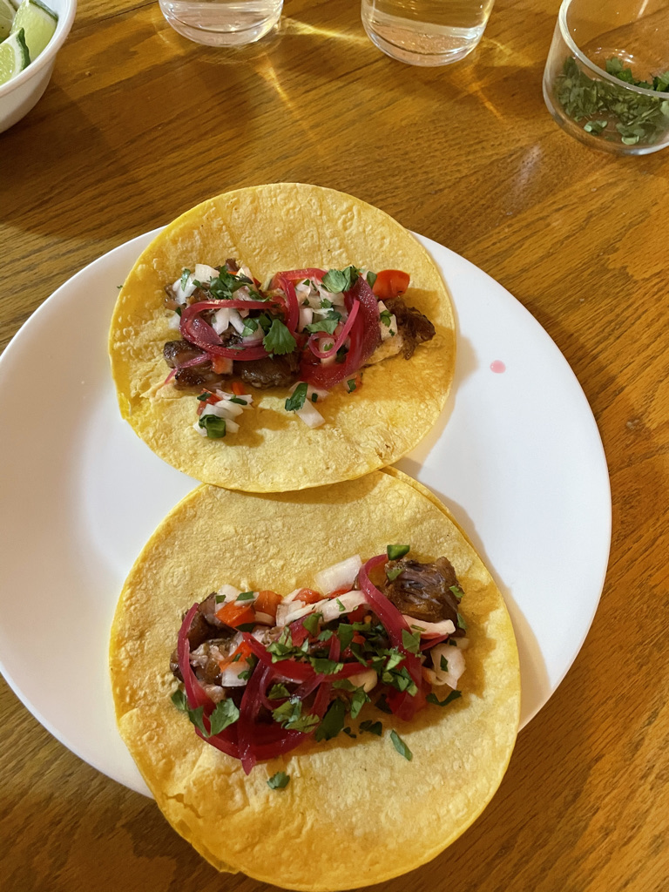

Carnitas

Source
Description
Delicious slow roasted pork finished under the broiler for a delightful crisp.
Ingredients
- 3 pounds boneless pork butt (shoulder), rind removed, cut into 2-inch cubes
- 1 tbsp kosher salt (this needs to be salted generously!)
- 1 tsp fresh ground black pepper
- 3/4 tsp cinnamon
- 1 tsp ground cumin
- 1/2 tsp Chinese 5-spice
- 1 orange, peel and juice
- 8 cloves peeled whole garlic
- 2 bay leaves, torn in half
- 1/4 cup olive oil
Steps
- Remove rind from pork butt
- Cut pork into ~2" cubes, cut fat into small pieces to allow them to render
- Combine pork pieces, fat pieces, and all other ingredients, mix thoroughly
- Spread ingredients in baking dish, try to evenly disperse garlic, orange peel, and bay leaves
- Cover tightly with aluminum foil
- Roast at 275 F. for about 3 1/2 hours or until fork tender
- Separate pork and fat pieces, strain liquid fat, pour liquid fat back on pork and fat and broil for ~5 minutes or until crispy, but not burnt.